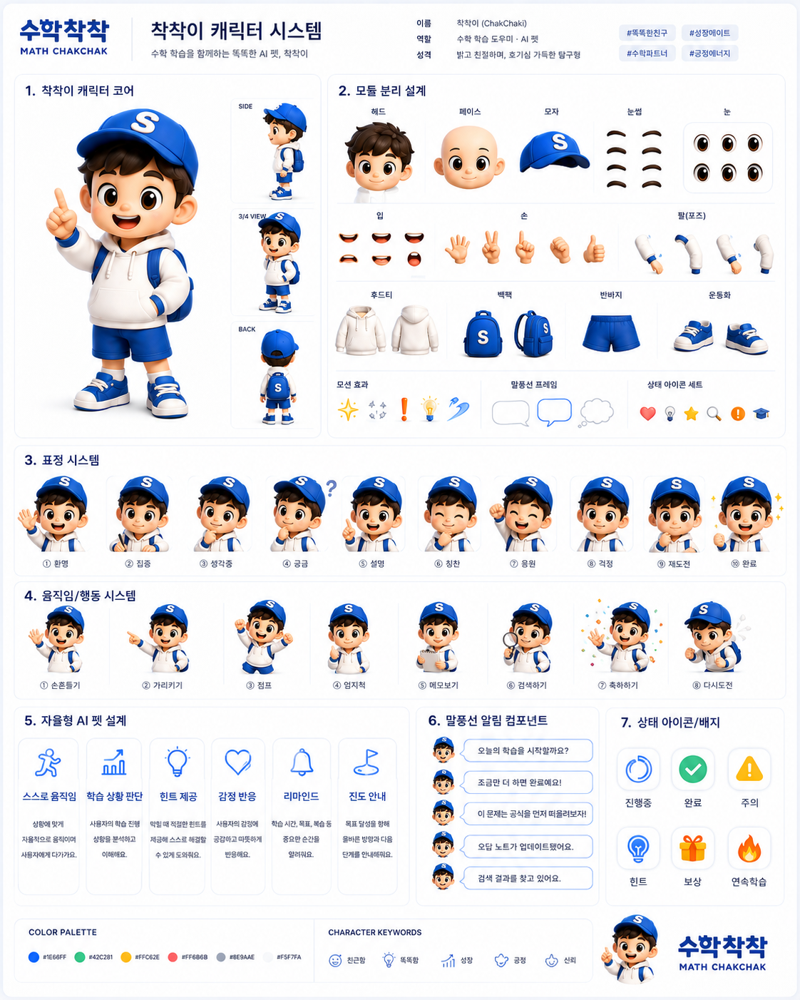
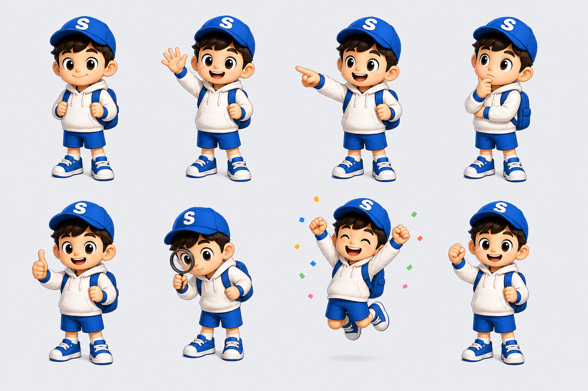
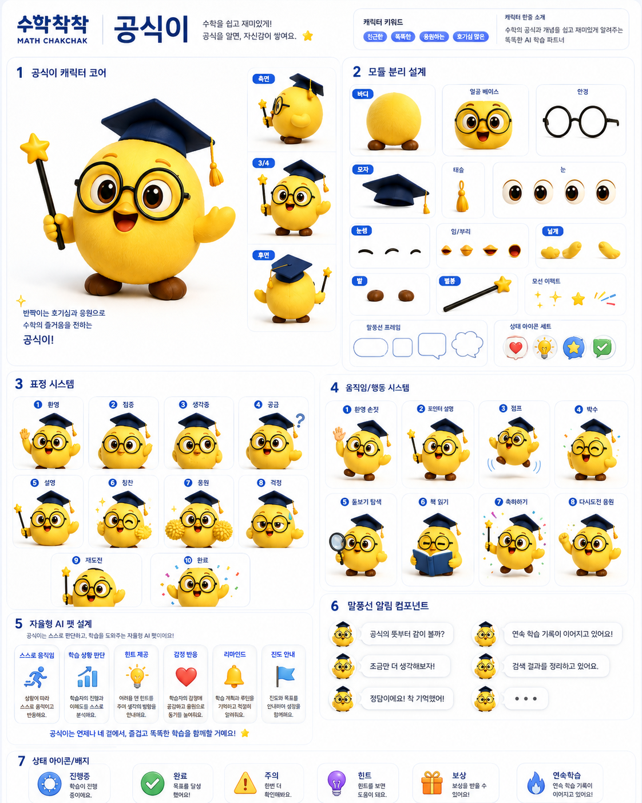

착착이
파란 S 모자, 짙은 갈색 머리, 큰 갈색 눈, 흰 후드, 파란 반바지·배낭·운동화를 확인합니다.


공식이
둥근 노란 몸체, 큰 갈색 눈, 남색 원형 안경·학사모, 짧은 갈색 발과 별 지시봉을 확인합니다.

착착이와 공식이의 다양한 표정과 학습 포즈
파란 S 모자, 짙은 갈색 머리, 큰 갈색 눈, 흰 후드, 파란 반바지·배낭·운동화를 확인합니다.


둥근 노란 몸체, 큰 갈색 눈, 남색 원형 안경·학사모, 짧은 갈색 발과 별 지시봉을 확인합니다.
